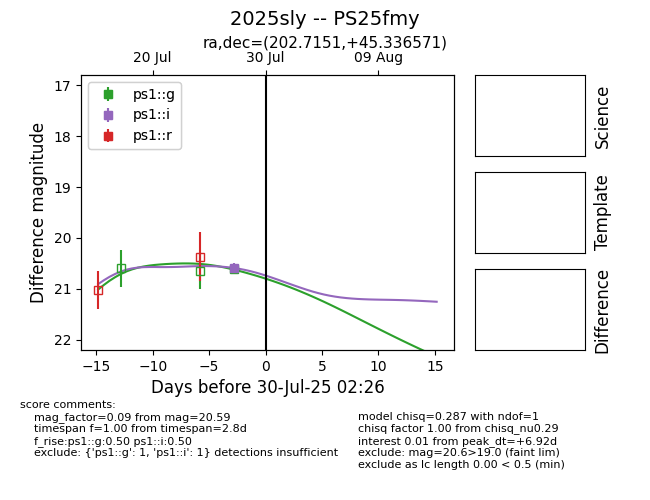

Target 2025sly at 2025-07-30 02:26, see:
TNS: wis-tns.org/object/2025sly
YSE: ziggy.ucolick.org/yse/transient_detail/2025sly
alt names
2025sly (yse,tns)
PS25fmy (panstarrs)
coordinates:
equatorial (ra, dec) = (202.7151,+45.33657)
galactic (l, b) = (102.1594,+70.16844)
photometry
last ps1::g=20.62, ps1::i=20.59
1 ps1::g, 1 ps1::i detections
